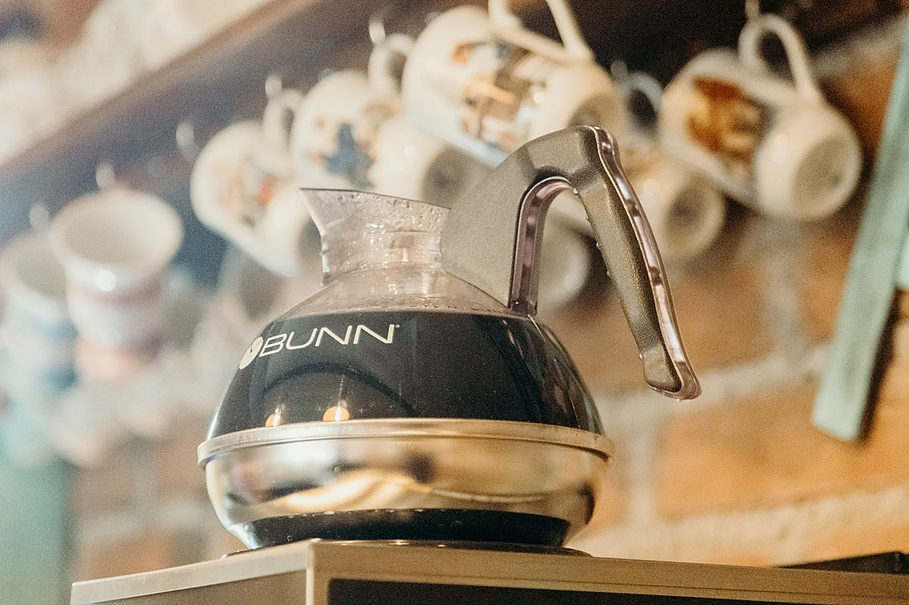
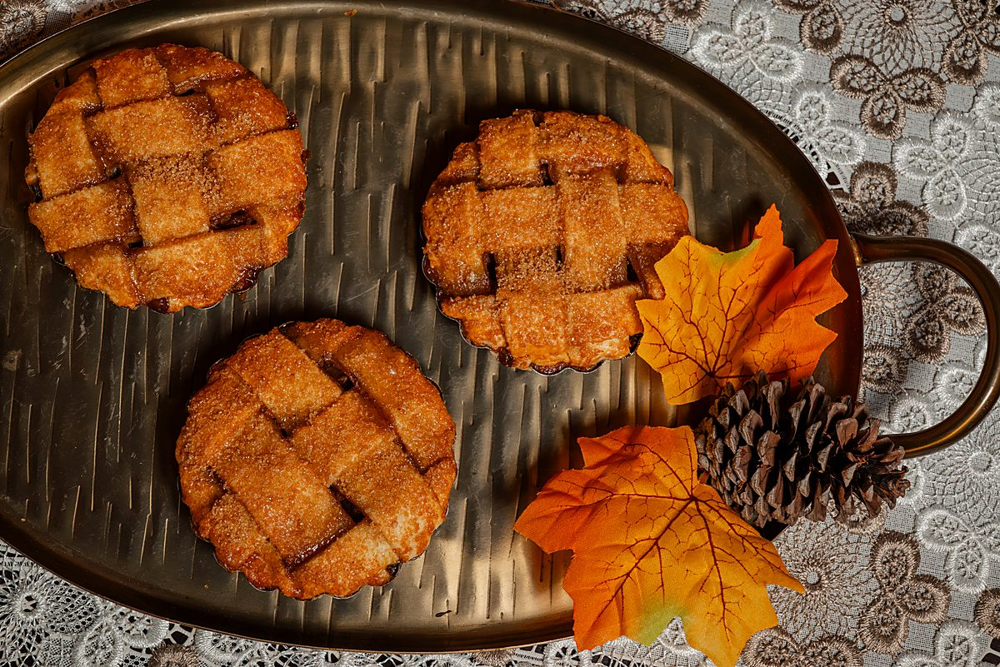
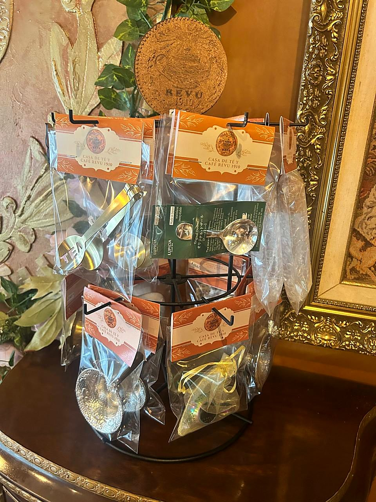
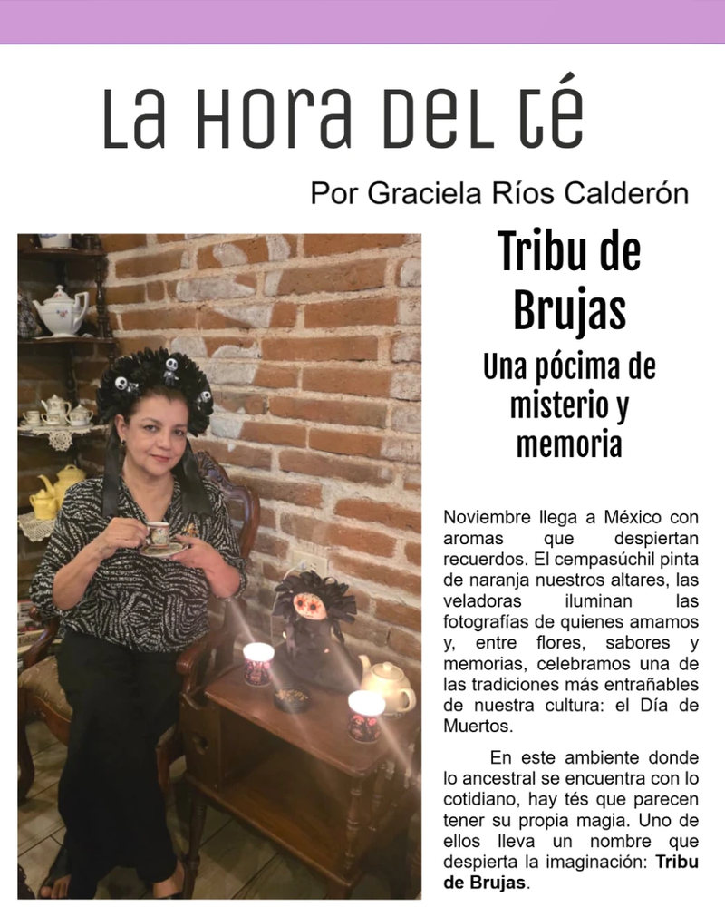
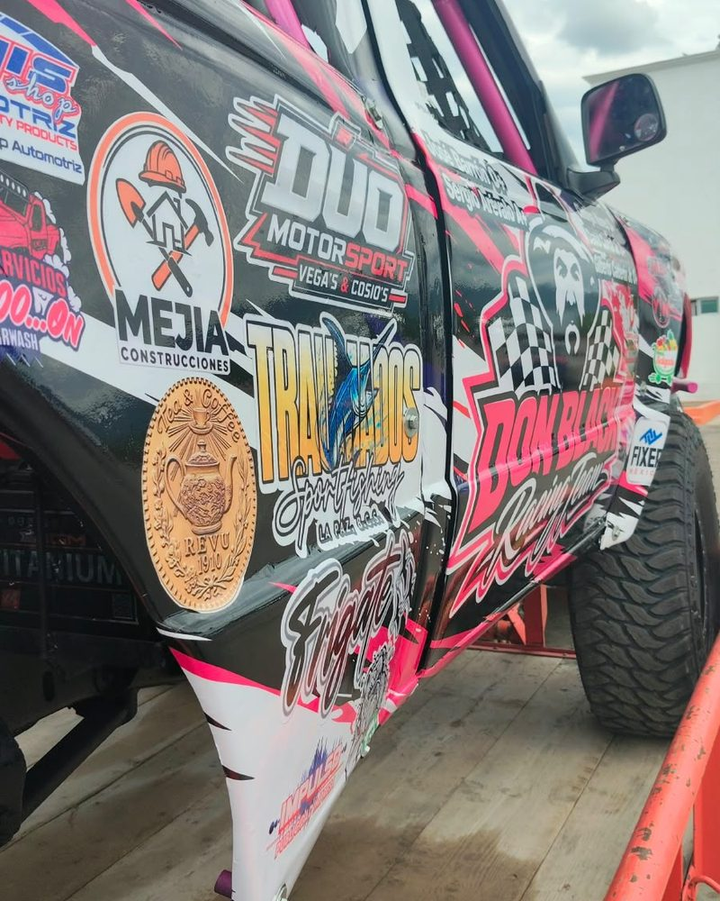

Tés del mundo
Selección de China, Japón, India, Taiwán, Sri Lanka y Marruecos. Se sirve en tetera.
Casa de té & café
Donde el tiempo vuelve a servir el té
La primera Casa de Té de La Paz, B.C.S. Tés del mundo, café hecho con cariño, paninis artesanales y repostería hecha en casa, servidos entre piezas con casi un siglo de historia.
Hay lugares que nacen para vender un producto y hay otros que nacen para conservar una historia. REVU 1910 pertenece a estos últimos.
Selección de China, Japón, India, Taiwán, Sri Lanka y Marruecos. Se sirve en tetera.

Espresso, latte, mocha y chai preparados a mano, calientes o helados, para acompañar la sobremesa.

Elaborada a diario con ingredientes frescos y productores de Baja California Sur.
Un sueño familiar que recorrió tres continentes antes de volver a casa.
6 de enero de 2023
Abrimos nuestras puertas como la primera Casa de Té establecida en La Paz.
Primera en el estado
Organizamos la primera cata especializada de té en Baja California Sur.
6 de junio de 2024
Certificación de Sommelier de Té por la Tea & Herbal Association of Canada.
Cada año
Celebramos el Día Internacional del Té, tradición que continúa.
Hoy
Catas mensuales, talleres y experiencias sensoriales.
Porque más que servir té, queremos compartir una experiencia que honre la historia, la tradición y el placer de conversar sin prisas.
Llévate la casa contigo: en nuestra boutique encuentras todo lo necesario para preparar el té como aquí.


En la casa
Preparar una buena taza en casa es más sencillo de lo que parece: hace falta una hoja bien elegida y unas cuantas piezas que hagan el trabajo. Eso es justo lo que reunimos en nuestra boutique.
Las existencias cambian con la temporada. Pregúntanos qué tenemos disponible o pásate a conocerlas.
Cada cierto tiempo abrimos la casa para catas, talleres y experiencias sensoriales alrededor del té y el café.
Dos noticias de la casa este noviembre: nuestra fundadora en la revista Mujeresaladas y nuestro emblema rumbo a la Baja 1000.

En la prensa · Mujeresaladas n.º 32
La edición de noviembre, especial de Día de Muertos, publica «La Hora del Té», la columna de nuestra fundadora, Graciela Ríos Calderón: primera Sommelier de Té certificada de Baja California Sur y quien abrió en 2023 la primera Casa de Té de La Paz. Esta vez cata Tribu de Brujas, una mezcla de pu-erh, cacao, menta y cempasúchil.
Revista digital mensual · la columna empieza en la página 136

Orgullo paceño · SCORE Baja 1000
REVU 1910 apoya a Don Black Racing, el equipo de La Paz que corre la 59.ª edición de la SCORE Baja 1000 «Cabo to Cabo» en la Clase 7SX, la de camionetas de producción modificadas. Tras la revisión mecánica y la contingencia en San José del Cabo, recibe el banderazo de salida el viernes 13 de noviembre.
¡Mucho éxito, equipo! Los esperamos en la meta.
Así se han vivido nuestras experiencias más recientes.
Un vistazo a nuestro rincón. Toca una foto para verla en grande.
Completa los datos y te llevaremos a WhatsApp con tu mensaje ya listo para enviar.
Calle Revolución #1445, e/ Reforma e Independencia, Zona Central, 23000 La Paz, B.C.S.